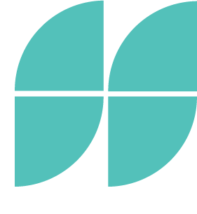
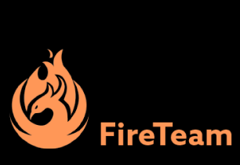
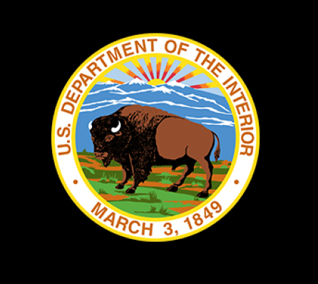
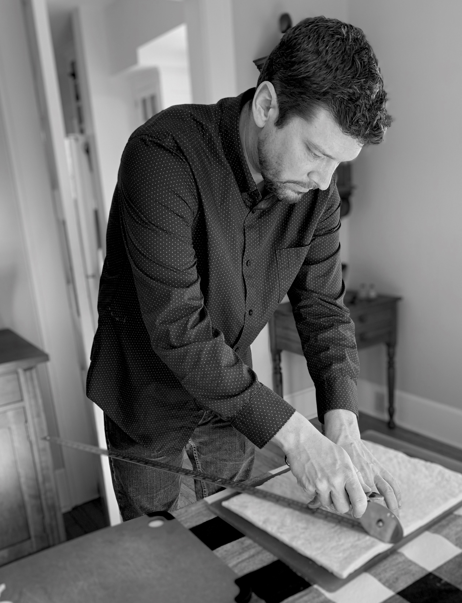

Simon Spaid is a UX/UI
Defining the problem for a holistic fitness company's

Updating Information Architecture Based on
Adobe XD
Miro
Adobe Illustrator
Paper & Pencil
User Interviews
Wire Framing
SIMON SPAID
- ABOUT
- SKILLS
- WORK
- CONTACT
Simon Spaid is a UX/UI
Designer Who Makes Sense
Out of The Complex
UX/UI Designer - MBA - Listner - Leader
CASE STUDIES

FireTeam
UX/UI DESIGN
STARTUP PRODUCT
CONSULTATION &
SITE CREATION
Defining the problem for a holistic fitness company's
first website. Using user research and A/B testing
Sage
USER RESEARCH / RAPID PROTOTYPING
APP DEVELOPMENT
FOR REDUCING
COOKING STRESS
Uncovering user pain points in a favorite activity

Department of Interior
UI DESIGN / RWD
WEBSITE REDESIGN FOR
FASTER USERFOWS &
BETTER OUTCOMES
Updating Information Architecture Based on
Usability Testing to Create Faster User Flows
MY SKILLS
Applications
FigmaAdobe XD
Miro
Adobe Illustrator
Tools
ListeningPaper & Pencil
User Interviews
Wire Framing